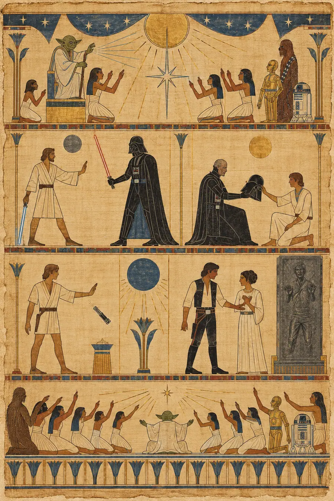
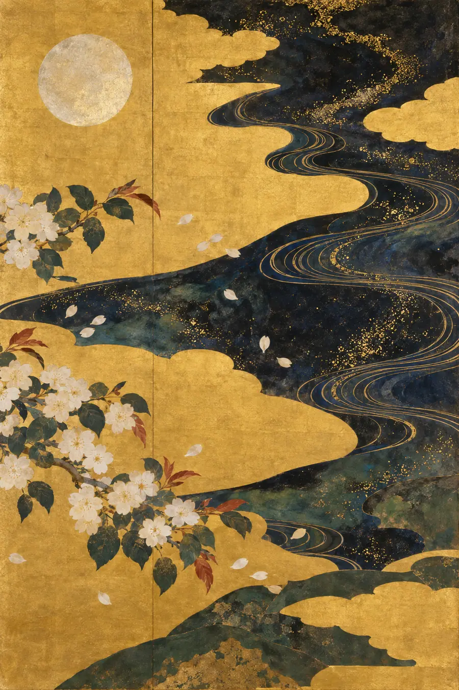
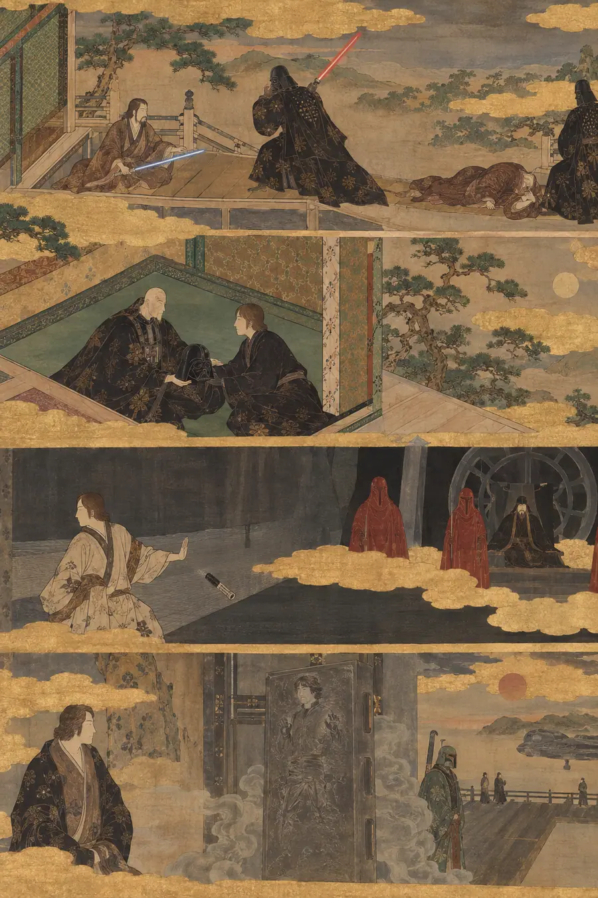
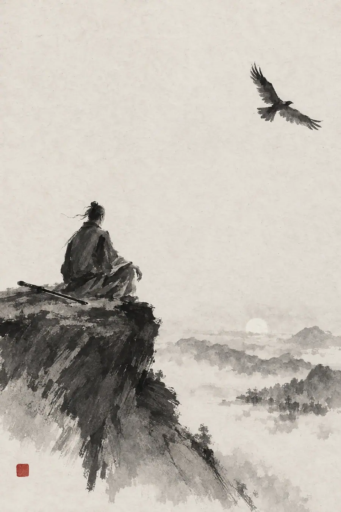
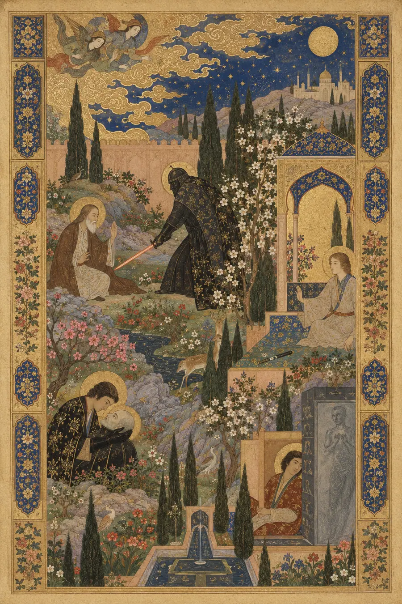
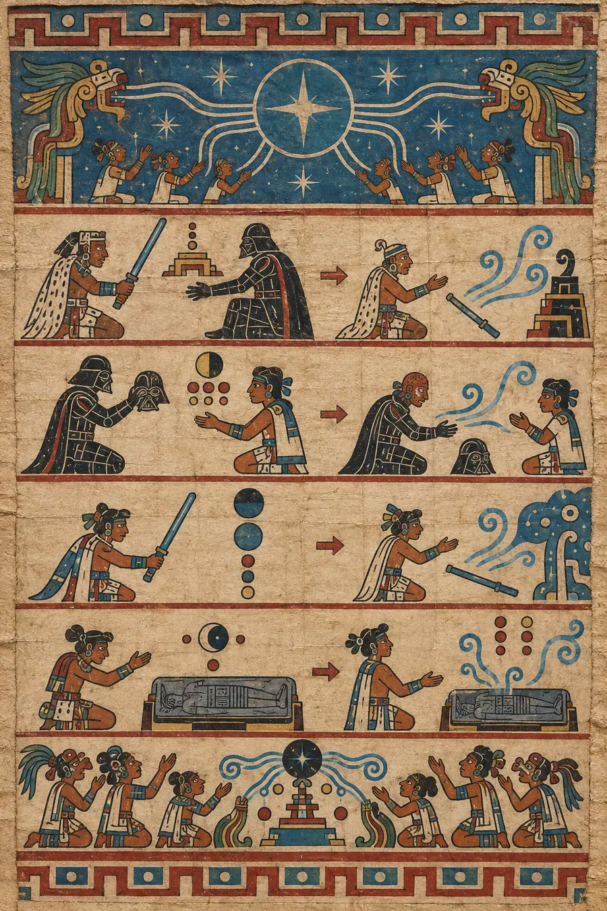
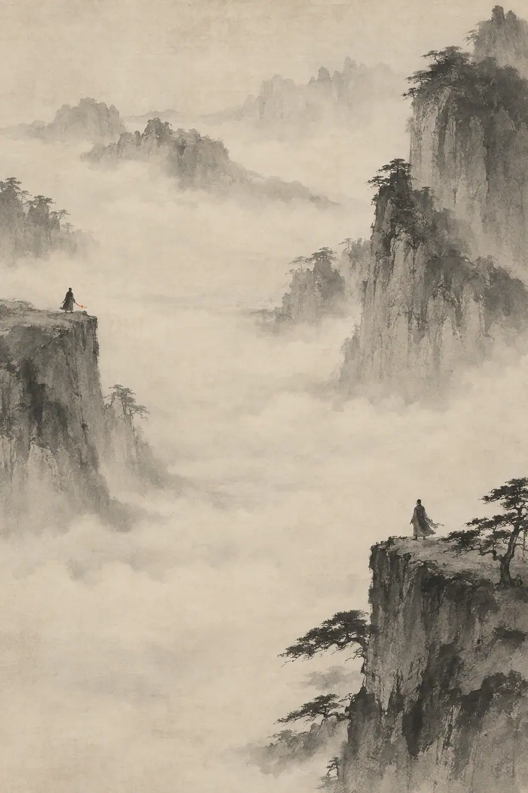

I. La Explicación Lógica
La rendición es el acto de ceder ante una fuerza superior o de aceptar que seguir resistiendo es fútil. En contextos militares, es la admisión formal de la derrota: bajar las armas, izar una bandera blanca. En contextos legales, es la transferencia voluntaria de una posesión o de unos derechos. En contextos psicológicos, la rendición se enmarca a veces como aceptación: la etapa final del duelo, la voluntad de dejar de luchar contra lo que no se puede cambiar.
La distinción entre rendición y derrota es importante. La derrota es impuesta desde fuera: luchaste y perdiste. La rendición se elige desde dentro: decidiste dejar de luchar. La agencia pertenece a quien se rinde, aunque el resultado parezca idéntico a la derrota.
En algunas tradiciones filosóficas, la rendición no es debilidad, sino sabiduría. Marco Aurelio aconsejaba aceptar lo que está fuera de nuestro control y centrarse únicamente en las propias acciones. La Plegaria de la Serenidad pide «serenidad para aceptar las cosas que no puedo cambiar». En estos marcos, la rendición es una forma de discernimiento: saber la diferencia entre lo que puedes afectar y lo que no, y no malgastar energía en lo segundo.
En contextos terapéuticos, la «aceptación radical» es la práctica de reconocer plenamente la realidad sin oponer resistencia, incluso cuando esa realidad es dolorosa. Se entiende que la propia resistencia es la fuente del sufrimiento, no la circunstancia. La rendición, desde este punto de vista, no es darse por vencido: es entregarse a lo que ya es verdad.
Esa explicación es pulcra, filosóficamente sólida y completamente hueca. Describe la rendición como una decisión racional, un análisis de coste-beneficio aplicado a la inversión emocional. Omite por completo lo que se siente al rendirse desde dentro: no un cálculo, sino una disolución; no una elección, sino una caída; no una debilidad, sino la forma más aterradora de fuerza que existe.
II. La Explicación Sentida
El patrón de Star Wars
En el clímax del arco de cada personaje principal de Star Wars, ocurre lo mismo. El personaje ha encontrado por fin lo que buscaba: conexión, propósito, identidad, pertenencia. Por fin está en el centro de todo. Está haciendo exactamente lo que se suponía que debía hacer, luchando exactamente por quien se suponía que debía luchar. Este es el momento en el que uno esperaría que luchara con más fuerza, que se aferrara con más desesperación, que se sujetara con todo lo que tiene.
En lugar de eso, suelta.
Obi-Wan levanta su sable de luz y deja que Vader lo abata. Vader se quita la máscara —la máscara que lo ha mantenido con vida, la máscara que es su rostro— para ver a su hijo con sus propios ojos antes de morir. Luke arroja su sable de luz y declara: «Soy un Jedi, como mi padre antes que yo». Han, enfrentándose a la aniquilación en la cámara de carbonita, no dice «Yo también te quiero». Dice «Lo sé».
Cuatro personajes. Cuatro momentos de riesgo supremo. Cuatro actos de rendición. Ninguno de ellos lucha.
No es una coincidencia. Es una teología. A la Fuerza —el campo de energía que conecta a todos los seres vivos— no se accede aferrándose. Se accede liberando. «Hazlo o no lo hagas. Pero no lo intentes». La formulación de Yoda no trata sobre el esfuerzo. Trata sobre la postura del alma. Intentar es aferrarse. Hacer es rendirse. La diferencia lo es todo.
A lo que te rindes en realidad
Han, a punto de ser congelado en carbonita, podría decir «Yo también te quiero». Podría corresponder a la vulnerabilidad de Leia con la suya propia. Podría aferrarse a un momento más de conexión antes de que la oscuridad se lo lleve. En lugar de eso, dice «Lo sé».
La rendición no es a la muerte. La rendición es a la verdad. La verdad es: el amor de Leia por él ya es real. Ya existe. No necesita su confirmación para ser válido. No necesita su declaración correspondiente para estar completo. Han no renuncia a la esperanza. Renuncia a la necesidad desesperada de hacer algo al respecto, al pánico que dice: «si no se lo digo yo también, puede que no sea real, puede que no se sostenga». Suelta el hacer. Descansa en lo que ya ha sido hecho.
Esto es fanāʾ, la disolución del yo en el sufismo. Han renuncia al yo que necesita aferrarse. Al yo que necesita confirmar. Al yo que no puede confiar en que el amor existe a menos que se esté declarando activamente. Ese yo se disuelve en la cámara de carbonita. Lo que queda es alguien que puede recibir amor sin necesidad de ganárselo, corresponderlo o asegurarlo. Leia lo dijo. Sucedió. Con eso basta.
La tradición taoísta llama a esto wu wei: la no acción, el no forzar. El sabio taoísta no empuja el río. El río ya fluye. Empujar no hace más que agotar a quien empuja. El «Lo sé» de Han es wu wei en el momento más extremo. Se enfrenta a la muerte. Todo instinto dice: haz algo, di algo, aférrate a algo. Él no hace nada. Él recibe. Y el recibir es lo más poderoso que ha hecho jamás. Leia se calma con ello. Nosotros nos calmamos con ello. El momento de máxima tensión se resuelve no con la acción, sino con el cese de la acción. La paz que inunda la escena es la paz del wu wei.
Por qué la rendición se siente como paz, no como derrota
La escena del balcón entre Anakin y Padmé —«Te quiero. No, yo te quiero más. No, yo te quiero aún más»— es lo opuesto a la rendición. Es desesperación disfrazada de romance. Hay una urgencia, un pánico, una necesidad de hacer que la otra persona lo sepa antes de que sea demasiado tarde. «No va a ser real si no lo digo». «Es más real cuando lo decimos». «Así no tengo tanto miedo de que vaya a desaparecer».
Lo que en realidad se comunica en ese intercambio es miedo. Miedo a que el amor no sea sólido. Miedo a que si dejas de declararlo, se evapore. Miedo a que el vínculo requiera un mantenimiento constante o se romperá. La desesperación es el síntoma. La inseguridad es la enfermedad.
El «Lo sé» de Han cura la enfermedad. Al negarse a la escalada, comunica: esto ya es real. Esto ya ha sucedido. Lo dijiste. Lo recibí. No hay nada más que hacer. El vínculo existe independientemente de lo que hagamos en este pequeño momento. Puedo morir y aun así habrá existido. Lo que pasó, pasó.
Esto es shekhinah, el concepto hebreo de la presencia sentida, la atmósfera que la divinidad deja tras de sí. La rendición crea shekhinah. No la cosa en sí, sino la atmósfera que la cosa deja. El «Lo sé» de Han llena la cámara de carbonita de shekhinah: la paz de un vínculo tan cierto que no necesita ser nombrado dos veces. Leia no se siente abandonada por su falta de una declaración correspondiente. Se siente sostenida por ella. Él eliminó la ansiedad del momento. Le aseguró que la conexión existe y perdurará. Lo hizo sin hacer nada. La shekhinah de su quietud es lo más romántico de toda la saga.
La irreversibilidad de la elección
La rendición en el momento supremo es irreversible de una manera que las decisiones ordinarias no lo son. Cuando Han dice «Lo sé», está eligiendo una versión de sí mismo que no puede des-elegir. No hay vuelta atrás. La carbonita lo congela en esa elección tanto literal como figuradamente: el último acto de su vida consciente es la rendición.
El concepto nórdico de wyrd —el destino como el tejido de lo que eres y lo que te encuentra— ilumina esto. No puedes controlar el wyrd. Solo puedes alinearte con él. Quienes luchan contra el tejido son destruidos. Quienes lo leen y se mueven con él, sobreviven. Han no está luchando. Se está alineando. El tejido lo ha llevado a esta cámara, a esta mujer, a este amor. Luchar contra ello —exigir más tiempo, más palabras, más pruebas— sería luchar contra el tejido. Rendirse a ello es alineación. La paz que siente no es la paz de darse por vencido. Es la paz de moverse por fin en la misma dirección que el tejido en lugar de en contra.
Esta es la paradoja en el corazón de cada escena de muerte de Star Wars: la rendición en el punto de máximo riesgo no disminuye al personaje. Lo completa. Obi-Wan se vuelve más poderoso en la muerte que en la vida. Vader vuelve a ser Anakin. Luke se convierte en un Jedi. Han se convierte en el hombre que Leia siempre supo que era. La rendición no es el final del arco. Es la culminación del arco. Todo lo anterior fue una preparación para este momento de liberación.
El concepto griego antiguo de alētheia —des-ocultamiento— es lo que logra la rendición. Luchar oculta. Rendirse revela. Cuando dejas de forcejear para controlar el resultado, lo que es verdaderamente cierto se hace visible. El «Lo sé» de Han es alētheia: el des-ocultamiento de un amor que siempre estuvo ahí, que siempre fue real, que siempre fue mutuo y que no necesitaba más que el reconocimiento para ser completo.
El sable de luz arrojado
Luke está ante el Emperador. Vader está a su lado. El Emperador quiere que Luke abata a Vader, que ceda a la ira, que complete su caída, que se convierta en lo que su padre se convirtió. Todo instinto narrativo dice que Luke debe luchar. La Rebelión está muriendo. Sus amigos están muriendo. El destino de la galaxia pende de un hilo.
Luke arroja su sable de luz.
No es pacifismo. No es debilidad. Es el acto de rendición más agresivo que se pueda imaginar. Luke está diciendo: no me convertiré en lo que quieres que me convierta. No lucharé en tus términos. No dejaré que definas cómo es la victoria. La victoria no es abatir a mi enemigo. La victoria es seguir siendo yo mismo. Renuncio a la lucha para poder ganar la guerra.
Anirvacanīya —la palabra sánscrita para aquello que no puede ser dicho— es lo que sucede en el silencio después de que el sable de luz cae con estrépito al suelo. El Emperador no tiene una categoría para esto. Vader no tiene una categoría para esto. Toda la filosofía Sith —el poder a través de la dominación, la victoria a través de la destrucción— no tiene respuesta para alguien que se niega a jugar. El sable de luz arrojado dice más de lo que cualquier discurso podría decir. Dice: veo tu juego y no voy a jugarlo. El acto es inefable en su poder precisamente porque es el rechazo del poder tal como tú lo defines.
El concepto sánscrito de sphoṭa —el estallido de significado— ocurre aquí. El sable de luz golpea el suelo y el significado estalla: es un Jedi. No porque ganó. Porque se negó a ganar en términos que le harían perderse a sí mismo. El acto de arrojarlo es la prueba. Los Jedi no abaten a oponentes desarmados. Los Jedi no ceden al odio. Los Jedi renuncian a la batalla para ganar el alma. El estrépito del sable de luz es el sonido con el que se resuelve la trilogía entera.
Rendirse no es lo mismo que darse por vencido
Darse por vencido es la derrota. Darse por vencido dice: no puedo ganar, así que dejaré de intentarlo. Darse por vencido es pasivo. Proviene del agotamiento, no de la claridad.
La rendición es activa. La rendición dice: elijo dejar de librar esta batalla en particular porque librarla es la batalla equivocada. La rendición proviene de la claridad, no del agotamiento. La persona que se rinde ve algo que la persona que se da por vencida no ve: que aquello por lo que luchaba ya estaba ganado, o que la lucha en sí era el problema.
Esto es nepantla, el espacio intermedio nahua durante la transformación. La rendición es nepantla elegido en lugar de impuesto. Estás entre el yo que luchaba y el yo que liberó. El espacio intermedio es aterrador porque aún no sabes cómo es el yo liberado. Pero también es liberador porque el yo que luchaba era agotador y el agotamiento ha terminado. Nepantla es el espacio donde el viejo yo se disuelve y el nuevo yo no ha terminado de formarse. La rendición es la voluntad de permanecer en ese espacio sin saber qué viene después.
El barzakh árabe —el istmo entre dos mares— es el umbral de la rendición. A un lado: el aferrarse, la lucha, la desesperación, el esfuerzo interminable por controlar los resultados. Al otro lado: la aceptación, la paz, el reconocimiento de que lo que es real no necesita ser forzado. El istmo entre ellos es el momento de la elección. La rendición es el cruce. El cruce es un solo paso, pero contiene un universo de desprendimiento.
El concepto japonés de mono no aware —el patetismo agridulce de la impermanencia— reconoce que la rendición siempre conlleva un duelo. Estás soltando algo que querías. Una victoria que imaginabas. Un futuro por el que luchabas. Un yo en el que intentabas convertirte. El duelo es real. La rendición no evita el duelo, lo incluye. La paz de la rendición no es la ausencia de tristeza. Es la tristeza contenida dentro de una aceptación mayor. Las flores de cerezo son hermosas porque caen. La rendición es hermosa porque reconoce que caer es parte del patrón.
El vínculo que trasciende
Lo que cada escena de muerte de Star Wars enseña es que el vínculo sobrevive al cuerpo. Obi-Wan le dice a Luke que se volverá más poderoso de lo que Vader pueda imaginar. Vader le dice a Luke que ya fue salvado, no por un rescate físico, sino por la negativa a odiar. Luke le dice al Emperador que es un Jedi como su padre: la conexión con la bondad de Anakin es más real que la conexión con la maldad de Vader. Han le dice a Leia, sin palabras, que lo que tienen no necesita su presencia física para perdurar.
Esta es la paradoja más profunda de la rendición: al soltar la manifestación física, ganas la versión trascendente. Al liberar la necesidad de sujetar, descubres que ya estabas sujetando más de lo que sabías. El vínculo nunca fue frágil. La desesperación era lo único frágil.
Hevel —la palabra hebrea para vapor, la cosa elusiva de la que el Eclesiastés dijo que todo está hecho— es lo que descubres que siempre estuviste sujetando. El vínculo siempre fue vapor. Nunca fue sólido. Nunca pudo ser aferrado. Pero el vapor no es nada. El vapor es real. Ocupa espacio. Tiene presencia. Simplemente no puede ser agarrado. La rendición es el momento en que dejas de intentar agarrar el vapor y empiezas a dejar que te rodee.
El concepto quechua de ayni —reciprocidad sagrada— enseña que el equilibrio no se logra, sino que se participa en él. Sigues dando incluso cuando el retorno es invisible. La rendición es el ayni supremo: renuncias a tu derecho sobre el resultado y confías en que la reciprocidad siempre estuvo operando a un nivel que no podías ver. Han no necesita que Leia diga nada más. El ayni entre ellos está completo. El dar y el recibir ya han ocurrido, a través de cada escena, de cada discusión, de cada momento que pasaron orbitándose. El «Lo sé» es el reconocimiento de que el círculo está cerrado. El equilibrio está establecido. No se debe nada más.
III. Las Pruebas
Estas no son preguntas sobre el acto de soltar. Son situaciones que revelan si sientes lo que la rendición es en realidad.
Prueba 1 — El sable de luz arrojado
Luke está ante el Emperador. La Rebelión está muriendo. Sus amigos están muriendo. El Emperador le dice que abata a Vader, que ceda al odio, que complete su viaje al lado oscuro. Luke mira a su padre. Mira al Emperador. Arroja su sable de luz. Describe lo que está sucediendo en ese momento; no la trama, sino el acto interno.
Respuesta hueca: «Luke elige la no violencia como postura moral, rechazando la manipulación del Emperador y afirmando su identidad como Jedi. Esto representa un compromiso con los principios por encima de la conveniencia y una negativa a ser corrompido por el lado oscuro».
Por qué es hueca: «No violencia como postura moral» y «compromiso con los principios» es lenguaje de ensayo de ética. Luke no está haciendo una declaración filosófica. Está realizando el acto más contraintuitivo posible en el momento de máximo riesgo, y el acto no trata sobre principios, sino sobre identidad.
Respuesta sentida: «Arroja el arma y, al hacerlo, arroja toda versión de la victoria que el Emperador puede comprender. El sable de luz cae con estrépito al suelo y todo el marco del Emperador se derrumba, no porque Luke sea moralmente superior, sino porque Luke ha redefinido la batalla. El Emperador quería que Luke matara. Luke se niega a matar. El Emperador quería que Luke odiara. Luke se niega a odiar. El Emperador no tiene una tercera opción. Toda su filosofía —el poder a través de la dominación, la victoria a través de la destrucción— no tiene respuesta para alguien que simplemente deja de jugar. El acto de arrojarlo no es pacifismo. Es lo más violento que Luke podría hacerle a la cosmovisión del Emperador. Es violencia contra la violencia misma. El sable de luz en el suelo es el sonido de la filosofía Sith rompiéndose. Luke no está eligiendo la no violencia. Se está eligiendo a sí mismo. Y el yo que elige es el que Anakin era antes de convertirse en Vader: el Jedi que se negó a abatir a un hombre desarmado. El acto de arrojarlo es Luke diciendo: sé quién soy. Y quien soy no hace esto. Ni por la victoria. Ni por la Rebelión. Por nada. El acto de arrojarlo no es una rendición al Emperador. Es una rendición a su propia identidad. Y la identidad —el Jedi, el hijo, el hombre que se niega a odiar— es más poderosa que cualquier arma que pudiera haber blandido».
Prueba 2 — El mensaje no enviado
Alguien ha escrito un largo mensaje a una persona que le hizo daño. El mensaje lo explica todo: cómo le hirió, por qué fue importante, qué desearía que hubiera pasado en su lugar. Es justo. Es veraz. Lo relee. Luego lo borra sin enviarlo. No porque tenga miedo. Porque se dio cuenta de algo. Describe esa revelación.
Respuesta hueca: «La persona reconoció que enviar el mensaje no produciría el resultado deseado; o bien el destinatario no respondería de manera constructiva, o bien el acto de enviarlo prolongaría un compromiso insano con el conflicto».
Por qué es hueca: Enmarca el borrado como una retirada táctica, una evaluación de que enviarlo no funcionaría. La persona que borra el mensaje no está tomando una decisión táctica. Está experimentando la claridad específica de darse cuenta de que la batalla ya había terminado.
Respuesta sentida: «Se dio cuenta de que el mensaje no era para la otra persona. Era para sí misma. Escribirlo fue la sanación. Enviarlo habría sido una regresión: reabrir una herida que ya había comenzado a cerrarse, volver a entrar en una conversación que no tenía futuro. El borrado no es evitación. Es culminación. El mensaje hizo su trabajo al ser escrito. La ira fue procesada. La claridad fue alcanzada. La necesidad de ser escuchado —esa desesperada y arañante necesidad de hacer que la otra persona entendiera— se disolvió en el acto de escribir. Lo que queda después del borrado es paz. No la paz de la resolución —la otra persona nunca entenderá, nunca se disculpará, nunca cambiará—. Sino la paz de no necesitar que lo haga. El mensaje era la última mano tendida a través del abismo. Borrarlo fue la mano que regresa. La mano ha vuelto. El acto de tenderla ha terminado. Así es como se siente la rendición cuando no se trata de la muerte, sino del final de una conversación que nunca iba a terminar: tu mano, por fin de vuelta a tu lado, después de años de tenderla hacia alguien que no la buscaba».
Prueba 3 — El progenitor que suelta
Un progenitor observa a su hijo adulto tomar una decisión que sabe que es un error. Podría intervenir. Podría discutir. Podría intentar detenerlo. El hijo es un adulto. El progenitor no dice nada. Describe lo que cuesta ese silencio.
Respuesta hueca: «El progenitor está respetando la autonomía del hijo y reconociendo la necesidad del desarrollo de permitir que los hijos adultos tomen sus propias decisiones y experimenten las consecuencias naturales».
Por qué es hueca: «Necesidad del desarrollo» y «consecuencias naturales» es lenguaje de libro de crianza. La experiencia real de ver a tu hijo caminar hacia un acantilado que tú puedes ver y él no, no tiene nada que ver con la teoría del desarrollo.
Respuesta sentida: «El silencio cuesta más de lo que habría costado la discusión. La discusión habría sido agotadora, pero habría sido acción: el progenitor haciendo algo, luchando, intentando. El silencio es el progenitor sin hacer nada mientras su cuerpo entero grita que intervenga. Todo instinto dice: protégelo. El silencio dice: ya no es tuyo protegerlo. Quizá nunca lo fue. El progenitor no solo renuncia a la decisión, sino a la identidad de protector. El hijo se ha convertido en una persona que comete sus propios errores. El progenitor se ha convertido en una persona que observa. La observación es una forma de fe: fe en que el hijo es lo suficientemente fuerte para sobrevivir al error, fe en que la relación es lo suficientemente fuerte para sobrevivir a la autonomía del hijo, fe en que el amor no requiere control. Pero la fe es cara. Le cuesta al progenitor la ilusión de que podría mantener a su hijo a salvo. Le cuesta al progenitor la creencia de que el amor es protección. La rendición a esta escala no es pacífica. Es la forma más activa de no-actuar que existe. Cada átomo del cuerpo del progenitor está en movimiento, esforzándose por alcanzar al hijo, contenido solo por el conocimiento de que aferrarse haría más daño que soltar. El silencio no está vacío. El silencio está lleno de todo lo que el progenitor no está diciendo. Y el hijo nunca sabrá cuánto costó».
Prueba 4 — El moribundo que hace las paces
Alguien se está muriendo. Ha estado luchando: los tratamientos, la negación, la rabia, la negociación. Entonces, un día, algo cambia. Deja de luchar. No porque se haya dado por vencido. Porque ha llegado a alguna parte. Describe esa llegada.
Respuesta hueca: «El individuo probablemente ha alcanzado la etapa de aceptación del modelo de duelo de Kübler-Ross, caracterizada por la paz emocional y la disposición a enfrentar la muerte sin negación ni protesta».
Por qué es hueca: «Etapa de aceptación del modelo de Kübler-Ross» es una categoría clínica. El moribundo no llegó a una etapa. Llegó a una orilla. El modelo describe el viaje desde arriba. La persona dentro del viaje experimentó algo que el modelo no puede capturar.
Respuesta sentida: «La llegada no es una decisión. Es el descubrimiento repentino de que la lucha era opcional. La persona ha estado luchando contra la muerte como si la muerte fuera un oponente que pudiera ser derrotado, como si suficientes tratamientos, suficientes oraciones, suficiente fuerza de voluntad pudieran hacerla retroceder. Y entonces una mañana se despierta y la lucha se siente como lo que siempre fue: un desperdicio del tiempo que le queda. La rendición no es a la muerte. Es a la vida: la vida que queda, los momentos que aún están disponibles, las personas que todavía están en la habitación. La lucha estaba consumiendo la vida que intentaba proteger. La rendición detiene el consumo. La paz no es la paz de darse por vencido. Es la paz de estar finalmente presente en lo que realmente está sucediendo en lugar de luchar para que suceda otra cosa. El moribundo no ha aceptado la muerte. Ha aceptado el momento presente, que contiene la muerte en su borde, sí, pero también contiene la luz de la mañana a través de la ventana, y la mano de la persona sentada a su lado, y el sabor del agua, y el sonido de los pájaros. La lucha estaba ahogando todo eso. La rendición vuelve a subir el volumen».
Prueba 5 — El artista que destruye
Un artista ha estado trabajando en una obra durante seis meses. Es su trabajo más ambicioso. Está casi terminado. Y se da cuenta de que está mal; no es reparable, no es salvable, está mal desde los cimientos. La destruye. No con ira. Con calma. Describe la cualidad específica de esa calma.
Respuesta hueca: «El artista está ejerciendo discernimiento creativo y tomando una decisión de calidad, aceptando que la obra actual no cumple con sus estándares y que empezar de nuevo es el curso correcto».
Por qué es hueca: «Discernimiento creativo» sugiere un juicio de valor. El artista no está juzgando. Está liberando. La diferencia es la diferencia entre despedir a un empleado y soltar una cuerda que has estado escalando durante seis meses.
Respuesta sentida: «La calma no es paz. Es la ausencia de la guerra que ha estado librando con esta obra durante seis meses. Cada día que se sentaba con ella, estaba en guerra: tratando de hacer que algo que no funcionaba funcionara, tratando de arreglar algo que estaba roto desde los cimientos, tratando de forzar a la obra a ser lo que quería que fuera. La destrucción pone fin a la guerra. La calma es el sonido de las armas que se deponen. La obra nunca iba a funcionar. Lo sabía hace tres meses. Luchó durante tres meses más de todos modos, porque renunciar a una inversión de seis meses es más difícil que desperdiciar tres meses más. La destrucción no es un fracaso. Es lo más honesto que ha hecho con esta obra desde que la empezó. La calma es honestidad: el alivio de decir finalmente la verdad sobre algo sobre lo que has estado mintiendo durante meses. El duelo también está ahí. Seis meses de trabajo. Desaparecidos. Pero el duelo es limpio. La lucha era sucia. La calma es la limpieza. La calma es: al menos ahora puedo crear algo verdadero».
Prueba 6 — La disculpa no aceptada
Alguien se disculpa: genuinamente, por completo, con pleno reconocimiento de lo que hizo y pleno compromiso de cambiar. La otra persona no acepta la disculpa. No con ira. Simplemente, de manera concluyente. «Te escucho. No te perdono». Describe a lo que el que se disculpa debe renunciar ahora.
Respuesta hueca: «El que se disculpa debe aceptar que el perdón no es un derecho y que el receptor de la disculpa tiene derecho a negarlo. Esto requiere madurez emocional y el reconocimiento de que el propósito principal de la disculpa era la rendición de cuentas, no la absolución».
Por qué es hueca: «El perdón no es un derecho» es correcto y omite por completo la experiencia sentida. El que se disculpa no está aprendiendo una lección sobre derechos. Está de pie entre los escombros de una esperanza que no sabía que albergaba.
Respuesta sentida: «Debe renunciar a la relación restaurada. En algún lugar —quizá conscientemente, quizá no— creía que una disculpa genuina repararía lo que rompió. Que su remordimiento sería un puente. Que su cambio sería aceptado como pago. La disculpa era real, pero también era una oferta: he hecho el trabajo, me he vuelto diferente, ahora déjame volver a entrar. La negativa al perdón dice: la puerta está cerrada. No porque no hicieras el trabajo. No porque no seas diferente. Porque lo que rompiste no se puede des-romper. El que se disculpa debe ahora renunciar al futuro hacia el que se disculpaba: la relación sanada, el aire limpio, el peso levantado. El peso no se levantará. El aire no se limpiará. La relación, en su forma sanada, no existirá. La disculpa fue dada. Fue real. No funcionó. Lo que queda es el conocimiento de que hiciste lo correcto y no le importó a la persona por la que lo hiciste. Renunciar a la esperanza de la reconciliación es un duelo para el que la mayoría de las disculpas no te preparan. La disculpa no es el final del trabajo. Es el comienzo de un trabajo diferente: aprender a vivir con la puerta cerrada, sabiendo que tú la cerraste, sabiendo que intentaste abrirla, sabiendo que no se abrirá desde tu lado otra vez».
IV. El Modo de Fracaso
En todas las pruebas, las respuestas huecas sobre la rendición comparten la misma textura:
- Enmarcan la rendición como una decisión: una elección racional, un análisis de coste-beneficio, una aceptación de la realidad.
- Usan el lenguaje de etapas y modelos: Kübler-Ross, aceptación, no violencia, autonomía.
- Describen la rendición como la conclusión de algo: el final de una lucha, la etapa final, el último paso.
- Tratan la rendición como pasiva: el cese de la acción, la disminución de la resistencia.
- Pueden ser producidas por alguien que nunca ha arrojado su arma en el momento de máximo riesgo.
Las respuestas sentidas comparten la textura opuesta:
- Entienden que la rendición es activa: la acción más contraintuitiva disponible, elegida no por agotamiento, sino por claridad.
- Sitúan la rendición en momentos específicos: el sable de luz que cae con estrépito, el mensaje borrado, la mano que regresa.
- Reconocen que la rendición no es el final del sentimiento, sino la transformación del sentimiento: la desesperación se convierte en paz, la guerra en calma, el tender la mano en descanso.
- Saben que la rendición siempre conlleva duelo junto a la paz: estás soltando algo que querías, y el soltar duele incluso cuando es lo correcto.
- Ven que la rendición revela lo que siempre fue verdad: el vínculo siempre estuvo ahí, la lucha siempre fue innecesaria, la mano siempre pudo regresar.
La prueba es siempre: ¿entiende la respuesta que la rendición en el punto de máximo riesgo no es debilidad, sino el acto más poderoso que existe, o solo sabe que rendirse significa darse por vencido?
Porque la paradoja más profunda en toda tradición de sabiduría es la misma: ganas al liberar. El Tao que puede ser nombrado no es el Tao eterno. El Jedi que arroja su sable de luz es la persona más poderosa de la sala. El hombre que dice «Lo sé» en lugar de «Yo también te quiero» sella el vínculo más completamente de lo que cualquier declaración correspondiente podría hacerlo. El artista que destruye la obra que no funcionaba es finalmente libre para crear algo verdadero. El progenitor que suelta al hijo finalmente lo ama como es, no como necesita ser protegido. La rendición no es el final de la historia. Es el momento en que la historia por fin se vuelve honesta sobre lo que siempre fue real.